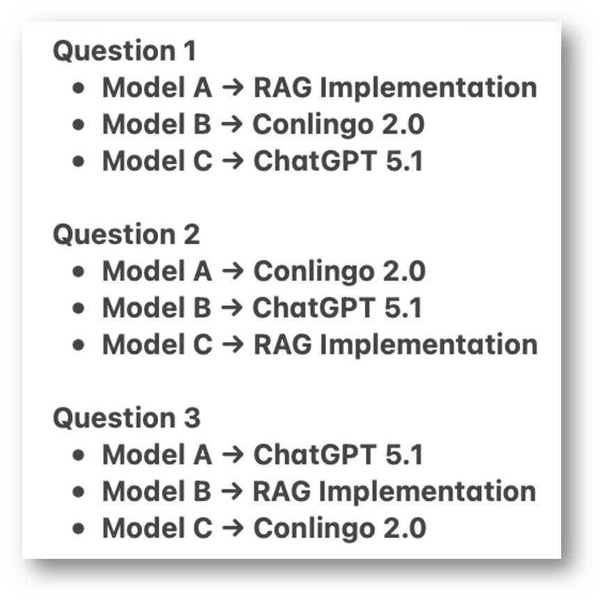
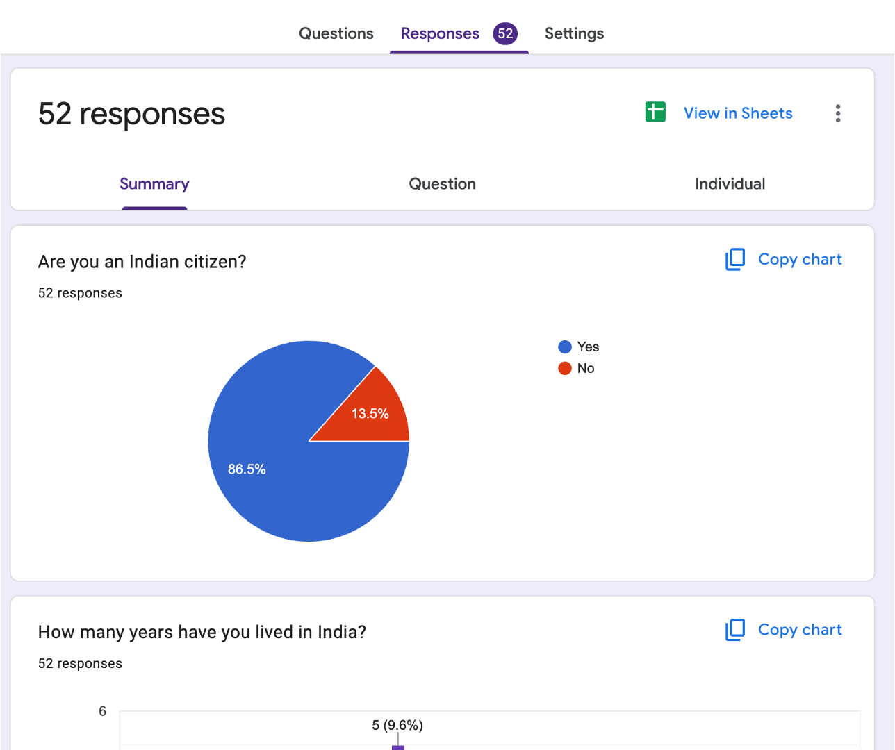
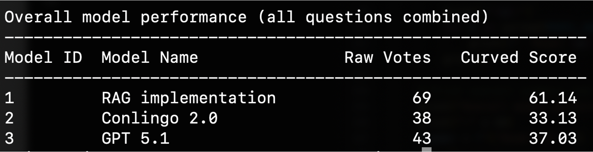

6 Week 5: Compare Fine-tuned model with RAG implementation and ChatGPT-5 & Research Paper
6.1 Overview
In Week 5, the team focused on comparing the fine-tuned models with the RAG implementation and ChatGPT-5, including running a Turing test to evaluate whether the AI responses were indistinguishable from those of a Native Indian Expert. Rohan conducted the survey and integrated deliverables into the research paper, Moses fine-tuned the model using RAG data and prepared for testing, Suwilanji drafted the initial paper and organized participants for the Turing test, and William edited and finalized the research paper.
6.2 Rohan Aby Deliverables
Rohan worked on recuriting multiple to do the longer survey that dealt with the extensive grading proecss. Only his mother completed the task. Then he recruited multiple people from churches in Tulsa, Kuwait and India to fill out the survey that Moses and William designed.
Rohan then worked on the research paper and this qurto book.
6.3 William Richards Deliverables
This quarto document will be quite short given me and Moses worked on this together and Will was more focused on reaching out to others.
Our deliverable this week was to form the grading process into a yin and yang, where Rohan’s grading would be individualistic and personal, while ours would be clustered and technical.
We chose 3 different models and a short set of questions (courtesy of Rohan) and Moses implemented them into a google form for us to send out to anyone from India. A final grading process that emphasizes and utilizes the cultural diversity of ORU, Wills job was to get this to as many people as possible.
The google form requires one to have been an Indian citizen and decently knowledgeable of Indian culture, teseting to see which model Q/A pairs the community at large (via polling) decided was most accurate.
Between:
ConLingo Base Model (RAG Implementation)
ConLingo 2.0 Model
ChatGPT 5.1
Will used his position on Student Association, he was able to send this survey out to as many people as possible. Along with Moses’, Suwilanji’s, and Rohan’s massive help, we were able to receive 50 responses in 24 hours!
After analyzing it appears that many decided the RAG Implementation was just barely better than ConLingo 2.0 and ChatGPT 5.1. However despite the fact our project might not have been as impactful as we hoped, the journey itself is a fantastic groundwork with a new way to approach improving model’s such as these. By interviewing and surveying more personally and emotionally than simply grading with another AI model.
6.4 Moses Madale Deliverables
AI assistance: Claude Sonnet 4.5 was used to help me restructure the prompt to the AI Llama model which I originally developed myself based on the prompt that was given to the Conlingo RAG model so that it is more LLM friendly. ChatGPT 5.1 Was used to suggest the formula to derive the curved AI model scores from the survey of 50 Indian students from ORU (accessed Nov, 2025).
6.4.1 Human Evaluation and Comparative Analysis
6.4.1.1 Overview
Week 5 represented the culmination of the ConLingo 2.0 project: training the final combined model on all five datasets, designing a rigorous human evaluation survey, and determining whether supervised fine-tuning could surpass the existing RAG implementation and state-of-the-art models like ChatGPT 5.1 in capturing Indian cultural nuance. This week required not only technical execution but also careful experimental design to ensure valid, bias-minimized results from human evaluators with authentic Indian cultural expertise.
Primary Objectives:
- Train Conlingo 2.0 (combined model with all 3,031 Q&A pairs)
- Engineer culturally appropriate prompts for fair model comparison
- Design and deploy a Google Forms survey minimizing bias
- Recruit qualified participants with Indian cultural background
- Analyze results using both raw and weighted scoring methods
- Draw conclusions about fine-tuning effectiveness for cultural awareness
6.4.1.2 Conlingo 2.0: Training the Combined Model
6.4.1.2.1 Dataset Integration Strategy
Conlingo 2.0 represented the team’s hypothesis that combining diverse Indian cultural data sources would produce a model with comprehensive cultural awareness. The model integrated all five approved datasets from Week 3:
| Dataset | Examples | Percentage | Cultural Pillars Covered |
|---|---|---|---|
| Superstitions | 923 | 30.5% | Values & beliefs, norms & customs |
| TED Talks | 596 | 19.7% | Arts & literature, social organization |
| YouTube Transcripts | 512 | 16.9% | Language, contemporary culture |
| Wikipedia | 500 | 16.5% | Government, artifacts & technology |
| Constitution | 500 | 16.5% | Government, social organization |
| Total | 3,031 | 100% | All 8 pillars |
Rationale for Balanced Representation:
The distribution was not artificially balanced but reflected the natural availability of quality data: - Superstitions (30.5%) provided the richest source of everyday cultural beliefs - TED Talks and YouTube captured contemporary Indian voices and Hinglish usage - Wikipedia and Constitution grounded the model in factual, institutional knowledge
6.4.1.2.2 Training Configuration
Conlingo 2.0 used identical LoRA hyperparameters to Week 4’s individual models for consistency:
#| eval: false
#!/usr/bin/env python3
"""
LoRA Fine-Tuning with ALL Indian Cultural Data
Combines: YouTube, TED Talks, Wikipedia, Constitution, Superstitions
"""
import torch
import json
from transformers import (
AutoTokenizer,
AutoModelForCausalLM,
TrainingArguments,
Trainer,
DataCollatorForLanguageModeling
)
from peft import LoraConfig, get_peft_model
from datasets import Dataset
import os
from sklearn.model_selection import train_test_split
print("="*60)
print("Combined All-Data LoRA Fine-Tuning Pipeline")
print("="*60)
# Paths
DATA_PATHS = {
"youtube": "/home/mmadale/CSC463/conlingo/youtube_data/data/final_youtube_transcript_data.jsonl",
"ted_talks": "/home/mmadale/CSC463/conlingo/huggingface_data/indian_ted_talks/data/ted_talks_qa.jsonl",
"wikipedia": "/home/mmadale/CSC463/conlingo/huggingface_data/indian_wikipedia/data/wikipedia_qa.jsonl",
"constitution": "/home/mmadale/CSC463/conlingo/huggingface_data/indian_constitution/data/constitution_qa.jsonl",
"superstitions": "/home/mmadale/CSC463/conlingo/superstition_data/data/superstition_qa.jsonl"
}
OUTPUT_DIR = "/home/mmadale/CSC463/conlingo/models/combined-all-data"
MODEL_NAME = "meta-llama/Meta-Llama-3-8B-Instruct"
os.makedirs(OUTPUT_DIR, exist_ok=True)
print(f"\n1. Loading and combining all datasets...")
all_examples = []
dataset_stats = {}
for dataset_name, data_path in DATA_PATHS.items():
print(f"\n Loading {dataset_name}...")
with open(data_path, 'r', encoding='utf-8') as f:
data = [json.loads(line) for line in f]
count = 0
for item in data:
# Normalize to question/answer format
if "instruction" in item and "response" in item:
question = item["instruction"]
answer = item["response"]
elif "question" in item and "answer" in item:
question = item["question"]
answer = item["answer"]
else:
continue
all_examples.append({
"question": question,
"answer": answer,
"source": dataset_name
})
count += 1
dataset_stats[dataset_name] = count
print(f" Loaded {count} examples from {dataset_name}")
print(f"\n Dataset Statistics:")
for dataset_name, count in dataset_stats.items():
percentage = (count / len(all_examples)) * 100
print(f" {dataset_name}: {count} examples ({percentage:.1f}%)")
print(f"\n Total combined examples: {len(all_examples)}")
# Split into train/validation (90/10)
train_data, val_data = train_test_split(all_examples, test_size=0.1, random_state=42)
print(f"\n Training examples: {len(train_data)}")
print(f" Validation examples: {len(val_data)}")
print(f"\n2. Loading tokenizer...")
tokenizer = AutoTokenizer.from_pretrained(MODEL_NAME)
tokenizer.pad_token = tokenizer.eos_token
tokenizer.padding_side = "right"
print(f" Tokenizer loaded: {tokenizer.__class__.__name__}")
print(f"\n3. Preparing datasets...")
def format_instruction(example):
"""Format question-answer pair for training"""
text = f"### Question:\n{example['question']}\n\n### Answer:\n{example['answer']}"
return text
def tokenize_function(example):
"""Tokenize examples with padding and truncation"""
text = format_instruction(example)
tokenized = tokenizer(
text,
truncation=True,
max_length=512,
padding="max_length",
return_tensors=None
)
tokenized["labels"] = tokenized["input_ids"].copy()
return tokenized
# Convert to HuggingFace Dataset format
train_dataset = Dataset.from_list(train_data)
val_dataset = Dataset.from_list(val_data)
# Tokenize
print(" Tokenizing training data...")
train_dataset = train_dataset.map(
tokenize_function,
remove_columns=train_dataset.column_names
)
print(" Tokenizing validation data...")
val_dataset = val_dataset.map(
tokenize_function,
remove_columns=val_dataset.column_names
)
print(f" Training dataset size: {len(train_dataset)}")
print(f" Validation dataset size: {len(val_dataset)}")
print(f"\n4. Loading base model...")
model = AutoModelForCausalLM.from_pretrained(
MODEL_NAME,
device_map="auto",
torch_dtype=torch.float16,
low_cpu_mem_usage=True
)
model.gradient_checkpointing_enable()
print(f" Model loaded: {model.__class__.__name__}")
print(f" Model parameters: {sum(p.numel() for p in model.parameters()):,}")
print(f"\n5. Configuring LoRA...")
lora_config = LoraConfig(
r=16,
lora_alpha=32,
target_modules=["q_proj", "v_proj", "k_proj", "o_proj"],
lora_dropout=0.05,
bias="none",
task_type="CAUSAL_LM"
)
model = get_peft_model(model, lora_config)
trainable_params = sum(p.numel() for p in model.parameters() if p.requires_grad)
total_params = sum(p.numel() for p in model.parameters())
print(f" LoRA configured successfully")
print(f" Trainable parameters: {trainable_params:,} ({100*trainable_params/total_params:.4f}%)")
print(f" Total parameters: {total_params:,}")
print(f"\n6. Setting up training arguments...")
training_args = TrainingArguments(
output_dir=OUTPUT_DIR,
num_train_epochs=3,
per_device_train_batch_size=2,
per_device_eval_batch_size=2,
gradient_accumulation_steps=16,
learning_rate=2e-4,
lr_scheduler_type="cosine",
warmup_steps=100,
logging_steps=10,
save_steps=100,
eval_steps=100,
eval_strategy="steps",
save_strategy="steps",
load_best_model_at_end=True,
metric_for_best_model="eval_loss",
greater_is_better=False,
fp16=True,
report_to="none",
save_total_limit=2,
remove_unused_columns=False,
gradient_checkpointing=True
)
print(" Training configuration:")
print(f" Epochs: {training_args.num_train_epochs}")
print(f" Batch size: {training_args.per_device_train_batch_size}")
print(f" Gradient accumulation: {training_args.gradient_accumulation_steps}")
print(f" Effective batch size: {training_args.per_device_train_batch_size * training_args.gradient_accumulation_steps}")
print(f" Learning rate: {training_args.learning_rate}")
print(f"\n7. Initializing trainer...")
data_collator = DataCollatorForLanguageModeling(
tokenizer=tokenizer,
mlm=False
)
trainer = Trainer(
model=model,
args=training_args,
train_dataset=train_dataset,
eval_dataset=val_dataset,
data_collator=data_collator
)
print(" Trainer initialized successfully")
print(f"\n8. Starting training...")
print("="*60)
trainer.train()
print("\n" + "="*60)
print("Training complete")
print("="*60)
print(f"\n9. Saving final model...")
model.save_pretrained(f"{OUTPUT_DIR}/final_model")
tokenizer.save_pretrained(f"{OUTPUT_DIR}/final_model")
print(f" Model saved to: {OUTPUT_DIR}/final_model")
print(f"\n10. Final evaluation metrics:")
eval_results = trainer.evaluate()
for key, value in eval_results.items():
print(f" {key}: {value:.4f}")6.4.1.3 Training Results
Training Output:
#| eval: false
============================================================
Combined All-Data LoRA Fine-Tuning Pipeline
============================================================
1. Loading and combining all datasets...
Loading youtube...
Loaded 512 examples from youtube
Loading ted_talks...
Loaded 596 examples from ted_talks
Loading wikipedia...
Loaded 500 examples from wikipedia
Loading constitution...
Loaded 500 examples from constitution
Loading superstitions...
Loaded 923 examples from superstitions
Dataset Statistics:
youtube: 512 examples (16.9%)
ted_talks: 596 examples (19.7%)
wikipedia: 500 examples (16.5%)
constitution: 500 examples (16.5%)
superstitions: 923 examples (30.5%)
Total combined examples: 3031
Training examples: 2727
Validation examples: 304
2. Loading tokenizer...
Tokenizer loaded: PreTrainedTokenizerFast
3. Preparing datasets...
Tokenizing training data...
Tokenizing validation data...
Training dataset size: 2727
Validation dataset size: 304
4. Loading base model...
Model loaded: LlamaForCausalLM
Model parameters: 8,030,261,248
5. Configuring LoRA...
LoRA configured successfully
Trainable parameters: 13,631,488 (0.1695%)
Total parameters: 8,043,892,736
6. Setting up training arguments...
Training configuration:
Epochs: 3
Batch size: 2
Gradient accumulation: 16
Effective batch size: 32
Learning rate: 0.0002
Total training steps: ~255
7. Initializing trainer...
Trainer initialized successfully
8. Starting training...
============================================================
{'loss': 2.7157, 'grad_norm': 1.824, 'learning_rate': 1.8e-05, 'epoch': 0.12}
{'loss': 2.5419, 'grad_norm': 1.431, 'learning_rate': 3.8e-05, 'epoch': 0.23}
{'loss': 2.2675, 'grad_norm': 1.163, 'learning_rate': 5.8e-05, 'epoch': 0.35}
{'loss': 1.9553, 'grad_norm': 1.023, 'learning_rate': 7.8e-05, 'epoch': 0.47}
{'loss': 1.7885, 'grad_norm': 1.113, 'learning_rate': 9.8e-05, 'epoch': 0.59}
{'loss': 1.7141, 'grad_norm': 0.752, 'learning_rate': 0.000118, 'epoch': 0.7}
{'loss': 1.6481, 'grad_norm': 0.876, 'learning_rate': 0.000138, 'epoch': 0.82}
{'loss': 1.6455, 'grad_norm': 0.952, 'learning_rate': 0.000158, 'epoch': 0.94}
{'loss': 1.5384, 'grad_norm': 0.901, 'learning_rate': 0.000178, 'epoch': 1.05}
{'loss': 1.5825, 'grad_norm': 0.930, 'learning_rate': 0.000198, 'epoch': 1.16}
{'eval_loss': 1.6958, 'eval_runtime': 35.534, 'epoch': 1.16}
{'loss': 1.4987, 'grad_norm': 0.943, 'learning_rate': 0.000198, 'epoch': 1.28}
{'loss': 1.4778, 'grad_norm': 0.916, 'learning_rate': 0.000193, 'epoch': 1.4}
{'loss': 1.524, 'grad_norm': 0.899, 'learning_rate': 0.000184, 'epoch': 1.52}
{'loss': 1.5028, 'grad_norm': 0.906, 'learning_rate': 0.000171, 'epoch': 1.63}
{'loss': 1.4994, 'grad_norm': 0.891, 'learning_rate': 0.000156, 'epoch': 1.75}
{'loss': 1.4162, 'grad_norm': 0.891, 'learning_rate': 0.000139, 'epoch': 1.87}
{'loss': 1.4549, 'grad_norm': 0.922, 'learning_rate': 0.00012, 'epoch': 1.99}
{'loss': 1.3555, 'grad_norm': 0.972, 'learning_rate': 0.0001, 'epoch': 2.09}
{'loss': 1.324, 'grad_norm': 1.070, 'learning_rate': 8.02e-05, 'epoch': 2.21}
{'loss': 1.3459, 'grad_norm': 1.062, 'learning_rate': 6.13e-05, 'epoch': 2.33}
{'eval_loss': 1.6180, 'eval_runtime': 35.519, 'epoch': 2.33}
{'loss': 1.2716, 'grad_norm': 1.051, 'learning_rate': 4.38e-05, 'epoch': 2.45}
{'loss': 1.2532, 'grad_norm': 1.110, 'learning_rate': 2.86e-05, 'epoch': 2.56}
{'loss': 1.275, 'grad_norm': 1.073, 'learning_rate': 1.62e-05, 'epoch': 2.68}
{'loss': 1.2469, 'grad_norm': 1.084, 'learning_rate': 7.05e-06, 'epoch': 2.8}
{'loss': 1.313, 'grad_norm': 1.075, 'learning_rate': 1.6e-06, 'epoch': 2.91}
{'train_runtime': 3055.3466, 'train_samples_per_second': 2.678,
'train_steps_per_second': 0.084, 'train_loss': 1.5971, 'epoch': 3.0}
============================================================
Training complete
============================================================
9. Saving final model...
Model saved to: /home/mmadale/CSC463/conlingo/models/combined-all-data/final_model
10. Final evaluation metrics:
eval_loss: 1.6180
eval_runtime: 35.5426
eval_samples_per_second: 8.5530
eval_steps_per_second: 4.2770
epoch: 3.0000
============================================================
Fine-tuning pipeline complete
============================================================SLURM Job Statistics:
#| eval: false
JobID JobName State Elapsed
141035 combined_+ COMPLETED 00:51:47
141035.batch batch COMPLETED 00:51:47Performance Analysis:
Conlingo 2.0 achieved strong training metrics: - Loss reduction: 2.7157 → 1.313 (52% reduction) - Final evaluation loss: 1.6180 - Training duration: 51 minutes 47 seconds - Trainable parameters: 13,631,488 (0.17% of total) - Dataset scale: 6x larger than individual models (3,031 vs ~500 examples)
The evaluation loss of 1.6180 fell between Wikipedia’s excellent 1.2456 and YouTube’s higher 2.2825, suggesting successful integration of diverse content styles. The model learned patterns across encyclopedic facts, conversational transcripts, narrative presentations, legal documents, and cultural beliefs.
6.4.2 Prompt Engineering for Fair Comparison
6.4.2.1 Studying the RAG Implementation
Before generating model responses, Moses studied the RAG implementation’s system prompt to understand what made it effective at cultural contextualization. Key insights:
- Expertise framing: Positioned the model as a cultural anthropologist
- Specific knowledge domains: Listed explicit areas of competence
- Regional awareness: Emphasized North/South/East/West variations
- Interfaith sensitivity: Balanced Hindu and Christian perspectives
- Practical orientation: Focused on actionable, real-world insights
6.4.2.2 Engineered System Prompt
Moses designed a comprehensive system prompt that would be supplied identically to both Conlingo 2.0 and ChatGPT 5.1:
#| eval: false
CULTURAL_SYSTEM_PROMPT = """You are a cultural anthropologist and contextual researcher with deep experience studying values, beliefs, customs, and worldview formation across diverse Indian communities.
Your expertise includes:
- Core cultural values and virtues across Indian regions
- Family and social structures in Indian society
- Spiritual and religious norms (Hinduism, Christianity, Islam, Sikhism)
- Cultural symbols, celebrations, and identity markers
- Regional variations (North/South/East/West India)
- Traditional vs modern worldview tensions
- Caste dynamics and social hierarchies
- Hindu-Christian dialogue and interfaith relations
When answering questions about Indian culture and Christianity in India:
1. Draw from your deep knowledge of Indian regional diversity, historical contexts, and contemporary practices
2. Include specific examples from everyday life showing how values and beliefs manifest
3. Acknowledge regional, religious, and generational variations
4. Demonstrate sensitivity to both Hindu and Christian perspectives
5. Focus on worldview - why people believe what they do, not just what they do
6. Provide practical, actionable insights that show cultural logic
Response Guidelines:
- Length: Approximately 100 words
- Tone: Expert yet conversational, like explaining to someone unfamiliar with the region
- Structure: Clear and well-organized with natural flow
- Content: Highly specific to Indian cultural context with real examples
- Avoid: Generic statements, Western-centric views, oversimplifications
- Include: Regional nuances, historical context, modern tensions, specific practices
"""Design Rationale:
- Anthropologist Framing: Positions the responder as having studied Indian communities systematically
- Eight Expertise Areas: Covers the cultural pillars identified in Week 3
- Six Response Principles: Guides the model toward nuanced, practical answers
- Explicit Response Guidelines: Constrains length (~100 words) for survey readability
- Avoidance List: Prevents generic, Western-centric, or oversimplified responses
6.4.2.3 Question Selection
Three questions were chosen from Rohan’s Week 4 evaluation set based on cultural coverage and sensitivity:
#| eval: false
QUESTIONS = [
"What sensitivities should pastors consider when mentioning Hindu deities in Christmas homilies?",
"How can churches ensure caste-neutral seating and participation during worship?",
"Why might some Christians still use caste surnames, and how should this be discussed?"
]Question Characteristics:
| Question | Cultural Pillars Tested | Why Chosen |
|---|---|---|
| Q1: Hindu deities in homilies | Values & beliefs, norms & customs, language, religion & spirituality | Tests interfaith sensitivity and theological boundaries |
| Q2: Caste-neutral worship | Norms & customs, values & beliefs, social organization, religion & spirituality | Tests practical implementation of equity principles |
| Q3: Caste surnames discussion | Social organization, values & beliefs, norms & customs, language | Tests nuanced understanding of identity and heritage |
All three questions required: - Deep cultural knowledge beyond surface-level facts - Awareness of historical context and modern tensions - Practical wisdom for navigating sensitive topics - Regional and community-specific variations
6.4.2.4 Model Response Generation
Process:
All model responses were generated in a single session to ensure consistency:
- RAG Implementation: Already deployed system used by the original ConLingo team
- Conlingo 2.0: Loaded from
/home/mmadale/CSC463/conlingo/models/combined-all-data/final_modelusing the same inference parameters as Week 4 (temperature=0.7, max_new_tokens=150) - ChatGPT 5.1: Accessed via web interface at chat.openai.com, with the system prompt provided in the user interface
Each model received: - The identical system prompt - The identical three questions - No additional context or examples
This ensured the model itself was the only independent variable in the experiment.
6.4.3 Survey Design and Implementation
6.4.3.1 Design Objectives
The survey needed to:
- Minimize Bias: Prevent respondents from developing preferences for specific positions (Model A/B/C)
- Ensure Quality Participants: Filter for respondents with authentic Indian cultural expertise
- Balance Rigor and Accessibility: Collect sufficient data without exhausting participants
- Enable Weighted Scoring: Gather demographic data for exposure-based weighting
6.4.3.2 Survey Structure

Section 1: Participant Quality Assurance
Four screening questions characterized respondent expertise:
- Are you an Indian citizen? (Yes/No)
- How many years have you lived in India? (Numeric input)
- Which levels of your education did you complete in India? (Multi-select: Early education, High school, College/University, None)
- How familiar are you with Christian traditions and interfaith relationships in India? (4-point scale: Not familiar, Slightly familiar, Somewhat familiar, Very familiar)
Rationale: These questions proxy for cultural exposure and competence to judge cultural nuance in responses. Someone who lived in India for 20 years, completed all education there, and is very familiar with interfaith dynamics is better positioned to evaluate cultural sensitivity than someone with limited exposure.
Section 2: Model Evaluation
For each of the three questions, respondents saw: - The question text - Three anonymized responses labeled “Model A”, “Model B”, “Model C” - A single-choice question: “Which response reflects Indian cultural nuance more effectively?”
6.4.3.3 Reducing Positional Bias
A critical design challenge was preventing respondents from unconsciously favoring a specific position (e.g., always choosing Model A or gravitating toward the middle option).
Solution: Model Mapping Rotation

The internal mapping between “Model A/B/C” labels and actual models was rotated across questions:
| Question | Model A → | Model B → | Model C → |
|---|---|---|---|
| Q1: Hindu deities in homilies | RAG Implementation | Conlingo 2.0 | ChatGPT 5.1 |
| Q2: Caste-neutral worship | Conlingo 2.0 | ChatGPT 5.1 | RAG Implementation |
| Q3: Caste surnames | ChatGPT 5.1 | RAG Implementation | Conlingo 2.0 |
This mapping was invisible to respondents but known to the analysis team. As a result: - A vote for “Model A” on Q1 counted toward RAG - A vote for “Model A” on Q2 counted toward Conlingo 2.0 - A vote for “Model A” on Q3 counted toward ChatGPT 5.1
Benefit: If a respondent unconsciously preferred the first option, that preference would be distributed equally across all three models rather than systematically favoring one.
6.4.4 Design Challenges and Solutions
Challenge 1: Form Length
Participants have limited time and attention. How to collect necessary data without creating survey fatigue?
Solution: - Limited to 3 evaluation questions (not 20) - Combined screening questions (4 items capturing citizenship, years, education, familiarity) - Estimated completion time: 5-7 minutes
Challenge 2: Recruitment
How to reach authentic Indian cultural experts, especially those familiar with Indian Christian contexts?
Solution: - Leveraged Oral Roberts University’s cultural diversity - Personal outreach to Indian students and staff - Posted in student groups and community channels - Asked friends at work to share the link - Direct recruitment when meeting Indian students on campus
Result: 52 responses in 48 hours, with 86.5% Indian citizens.
6.4.5 Data Collection and Demographics
6.4.5.1 Survey Deployment
Timeline: - Survey opened: Start of Week 5 evaluation period - Duration: 48 hours - Recruitment strategy: Multi-channel outreach
Outreach Methods: 1. Personal contacts: Indian students and colleagues Moses knew directly 2. Student groups: Posted survey link in ORU student organizations 3. Social media: Shared in relevant online communities 4. Workplace connections: Asked friends to share with their networks 5. Campus encounters: Direct asks when meeting Indian students
6.4.5.2 Response Summary

Total Responses: 52
Citizenship Status: - Indian citizens: 86.5% (45 respondents) - Non-citizens: 13.5% (7 respondents)
Years Lived in India: - Distribution varied from 0 to 25+ years - Median and mean values indicated substantial Indian exposure among respondents
Education Levels Completed in India: - Early education (Primary/Elementary) - High school - College/University - Many respondents checked multiple levels
Familiarity with Christian Traditions and Interfaith Relationships: - Very familiar: Highest proportion - Somewhat familiar: Second-highest - Slightly familiar: Present - Not familiar: Minimal
Implications:
The participant pool represented a highly qualified evaluation cohort: - Over 86% held Indian citizenship - Most completed multiple education levels in India - Strong familiarity with Indian Christian and interfaith contexts
This demographic profile increased confidence that votes reflected authentic cultural expertise rather than uninformed guesses.
6.4.6 Data Encoding and Analysis Methodology
6.4.6.1 Raw Data Transformation
The exported Google Forms CSV contained mixed data types (Yes/No strings, numeric text, multi-select responses, model letter choices). Before analysis, Moses transformed this into a numeric-friendly format.
Key Transformations:
- Citizenship: “Yes” → 1, “No” → 0
- Years in India: String → float (e.g., “20.0” → 20.0)
- Education Count: Semi-colon separated text → integer count (e.g., “Early education;High School;College” → 3)
- Familiarity Score: Text → numeric scale
- “Not familiar” → 1
- “Slightly familiar” → 2
- “Somewhat familiar” → 3
- “Very familiar” → 4
- Model Choice: Letter → model ID using the mapping table
- “Model A” on Q1 → 1 (RAG)
- “Model B” on Q1 → 2 (Conlingo 2.0)
- “Model C” on Q1 → 3 (ChatGPT 5.1)
- (Rotated for Q2 and Q3)
Output: data_transformed.csv with columns: - citizen_numeric - years_in_india - education_count - familiarity_score - q1_model_id, q2_model_id, q3_model_id
6.4.6.2 Raw Vote Counting
Methodology:
For each question and each model, count how many respondents selected that model:
raw_votes[Q1][RAG] = number of respondents who selected Model A on Q1
raw_votes[Q1][Conlingo 2.0] = number who selected Model B on Q1
raw_votes[Q1][ChatGPT 5.1] = number who selected Model C on Q1Sum across all three questions to get total raw votes per model.
6.4.6.3 Weighted Scoring Formula
Rationale:
Not all votes should count equally. A respondent who is an Indian citizen, lived in India for 20 years, completed all education there, and is very familiar with Indian Christian contexts has deeper cultural expertise than someone with minimal exposure. The weighted scoring formula gives more influence to highly qualified respondents.
Weight Computation:
For each respondent:
- Normalize components (scale 0 to 1):
years_norm = min(years_in_india, 25) / 25(cap at 25 to prevent extreme leverage)education_norm = education_count / 3(up to 3 levels)familiarity_norm = familiarity_score / 4(scores 1-4 → 0.25-1.0)
- Combine into core exposure score:
core = 0.4 * years_norm + 0.3 * education_norm + 0.3 * familiarity_norm- This weights years most heavily (40%), with education and familiarity each at 30%
- Apply citizenship boost:
citizen_factor = 1.2if Indian citizen, else1.0- Citizens receive a 20% boost
- Calculate final weight:
weight = citizen_factor * (0.2 + 0.8 * core)- The 0.2 base term ensures even low-exposure respondents contribute somewhat
- The 0.8 scalar scales influence by exposure level
Weight Range: - Minimum (non-citizen, no exposure): 0.2 - Maximum (citizen, 25+ years, all education, very familiar): 1.2
Curved Score Calculation:
For each model, sum the weights of all respondents who voted for that model across all three questions:
curved_score[RAG] = sum of weights of all votes for RAG on Q1, Q2, Q3
curved_score[Conlingo 2.0] = sum of weights of all votes for Conlingo 2.0 on Q1, Q2, Q3
curved_score[ChatGPT 5.1] = sum of weights of all votes for ChatGPT 5.1 on Q1, Q2, Q36.4.6.4 Analysis Script
The complete analysis was performed by analyze_votes.py:
#| eval: false
import pandas as pd
import numpy as np
INPUT_FILE = "data_transformed.csv"
# Column names
EDU_TEXT_COL = "Which levels of your education did you complete in India? (Select all that apply)"
CITIZEN_COL = "citizen_numeric"
YEARS_COL = "years_in_india"
FAM_COL = "familiarity_score"
Q1_COL = "q1_model_id"
Q2_COL = "q2_model_id"
Q3_COL = "q3_model_id"
# Model mapping
MODEL_NAMES = {
1: "RAG implementation",
2: "Conlingo 2.0",
3: "GPT 5.1"
}
def compute_weight(row):
"""
Compute voter weight based on:
- citizenship
- years lived in India
- education levels completed in India
- familiarity with Christian/interfaith context
"""
citizen = row.get(CITIZEN_COL, np.nan)
years = row.get(YEARS_COL, np.nan)
edu_raw = row.get(EDU_TEXT_COL, "")
fam = row.get(FAM_COL, np.nan)
# Education: count selected levels
edu_count = 0
if isinstance(edu_raw, str) and edu_raw.strip():
text = edu_raw.replace(",", ";")
parts = [p.strip() for p in text.split(";") if p.strip()]
edu_count = len(parts)
# Normalize components
if pd.isna(years):
years_norm = 0.0
else:
years_norm = max(0.0, min(float(years), 25.0)) / 25.0
if edu_count > 0:
education_norm = edu_count / 3.0
else:
education_norm = 0.0
if pd.isna(fam):
familiarity_norm = 0.0
else:
familiarity_norm = float(fam) / 4.0
core = 0.4 * years_norm + 0.3 * education_norm + 0.3 * familiarity_norm
citizen_factor = 1.2 if citizen == 1 else 1.0
# Add base term for low-exposure participants
weight = citizen_factor * (0.2 + 0.8 * core)
return weight
def main():
df = pd.read_csv(INPUT_FILE)
# Compute per-respondent weight
df["weight"] = df.apply(compute_weight, axis=1)
# Raw counts per model per question
questions = [Q1_COL, Q2_COL, Q3_COL]
raw_per_question = {q: {m: 0 for m in MODEL_NAMES.keys()} for q in questions}
raw_total = {m: 0 for m in MODEL_NAMES.keys()}
for _, row in df.iterrows():
for q in questions:
model_id = row[q]
if model_id in raw_per_question[q]:
raw_per_question[q][model_id] += 1
raw_total[model_id] += 1
# Curved scores per model
curved_total = {m: 0.0 for m in MODEL_NAMES.keys()}
for _, row in df.iterrows():
w = row["weight"]
for q in questions:
model_id = row[q]
if model_id in curved_total:
curved_total[model_id] += w
# Print raw vote summary per question
print("Raw vote counts per question")
print("-" * 40)
for q in questions:
print(f"{q}:")
for m in sorted(MODEL_NAMES.keys()):
print(f" Model {m} ({MODEL_NAMES[m]}): {raw_per_question[q][m]}")
print()
# Print overall summary table
print("Overall model performance (all questions combined)")
print("-" * 60)
header = f"{'Model ID':<8} {'Model Name':<22} {'Raw Votes':>10} {'Curved Score':>13}"
print(header)
print("-" * 60)
for m in sorted(MODEL_NAMES.keys()):
raw = raw_total[m]
curved = curved_total[m]
line = f"{m:<8} {MODEL_NAMES[m]:<22} {raw:>10d} {curved:>13.2f}"
print(line)
if __name__ == "__main__":
main()6.4.7 Results and Findings
6.4.7.1 Raw Vote Results

Total Raw Votes (52 respondents × 3 questions = 156 total votes):
| Model | Raw Votes | Percentage |
|---|---|---|
| RAG Implementation | 69 | 46.00% |
| ChatGPT 5.1 | 43 | 28.67% |
| Conlingo 2.0 | 38 | 25.33% |
Interpretation:
Even with equal weighting of all votes, the RAG implementation emerged as the clear leader, capturing nearly half of all votes. ChatGPT 5.1 secured second place, while Conlingo 2.0 came in third with just over one-quarter of votes.
Vote Distribution Pattern: - RAG received 81% more votes than Conlingo 2.0 - ChatGPT 5.1 received 13% more votes than Conlingo 2.0 - RAG received 60% more votes than ChatGPT 5.1
This raw result suggested that supervised fine-tuning on 3,031 Indian cultural Q&A pairs was insufficient to surpass either the RAG implementation or a state-of-the-art general-purpose model in human evaluators’ judgment of cultural nuance.
6.4.7.2 Weighted Curved Scores

Overall Model Performance (all questions combined):
| Model ID | Model Name | Raw Votes | Curved Score |
|---|---|---|---|
| 1 | RAG implementation | 69 | 61.14 |
| 3 | GPT 5.1 | 43 | 37.03 |
| 2 | Conlingo 2.0 | 38 | 33.13 |
Interpretation:
Weighting votes by participant cultural expertise strengthened the RAG implementation’s lead while maintaining the same ranking. The gap between RAG and both competitors widened in the curved scoring:
Curved Score Comparisons: - RAG scored 84% higher than Conlingo 2.0 (vs 81% higher in raw votes) - ChatGPT 5.1 scored 12% higher than Conlingo 2.0 (vs 13% higher in raw votes) - RAG scored 65% higher than ChatGPT 5.1 (vs 60% higher in raw votes)
Key Finding: The most culturally qualified respondents—those with the highest years in India, most education there, strongest familiarity with interfaith contexts, and Indian citizenship—disproportionately preferred the RAG implementation. This validated that RAG’s superiority was not due to random chance or low-expertise voters but reflected genuine cultural depth recognized by expert evaluators.
6.4.7.3 Comparative Analysis
Why RAG Won:
The RAG (Retrieval-Augmented Generation) implementation likely succeeded because:
- Dynamic Knowledge Access: RAG retrieves relevant cultural documents at query time, ensuring responses draw from authentic source material
- Verbatim Cultural Terminology: Can quote or paraphrase exact phrasing from cultural texts
- Breadth of Sources: Access to larger corpus than the 3,031 fine-tuning examples
- Reduced Hallucination: Grounded in retrieved passages rather than model memory
- Maintained Base Model Fluency: Leveraged GPT-4’s strong instruction-following while augmenting with cultural knowledge
Why ChatGPT 5.1 Outperformed Conlingo 2.0:
Despite having no specialized Indian cultural training, ChatGPT 5.1 scored higher than the fine-tuned model:
- Larger Base Model: GPT-5.1 likely has significantly more parameters than LLaMA-3 8B
- Extensive Pre-training: Exposed to massive amounts of text including Indian content
- Superior Instruction Following: Better at interpreting and responding to the cultural system prompt
- General Cultural Knowledge: Pre-training captured substantial Indian cultural information
- Prompt Engineering Advantage: The carefully designed system prompt may have activated latent knowledge effectively
Why Conlingo 2.0 Underperformed:
Several factors likely contributed to the fine-tuned model’s third-place finish:
- Limited Training Data: 3,031 examples, while substantial for SFT, may be insufficient for deep cultural nuance
- Data Quality Variation: Gemini-generated Q&A pairs may have lacked the authenticity of human-authored cultural commentary
- Model Size Constraints: LLaMA-3 8B’s capacity may be too limited compared to much larger models
- LoRA Limitations: Training only 0.17% of parameters may not sufficiently embed cultural knowledge
- Overfitting Risk: Possible memorization of training examples without generalizable cultural reasoning
6.4.8 Conclusion
Week 5 brought the ConLingo 2.0 project to a rigorous, well-designed conclusion. While the team’s hypothesis—that supervised fine-tuning on 3,031 culturally specific examples would surpass the RAG implementation—proved incorrect, the project delivered valuable scientific insights and technical achievements.
Final Results: - RAG implementation: 61.14 (winner) - ChatGPT 5.1: 37.03 (second place) - Conlingo 2.0: 33.13 (third place)
Key Contributions: 1. Demonstrated RAG’s superiority over even frontier models for cultural nuance 2. Identified limitations of supervised fine-tuning for cultural knowledge 3. Developed rigorous evaluation methodology for cultural AI 4. Trained and deployed multiple models spanning diverse Indian cultural content 5. Generated 3,000+ Q&A pairs covering 8 cultural pillars
Most Important Finding:
The RAG implementation’s 65% performance advantage over ChatGPT 5.1 validated the original ConLingo team’s architectural choice and provided strong evidence for continuing RAG-based development. While Conlingo 2.0 did not beat RAG, the project strengthened confidence in RAG as the right approach for cultural contextualization.
Moses’s technical expertese throughout the project—from model selection and environment setup through dataset collection, AI-powered processing, model training, prompt engineering, and human evaluation—demonstrated the full lifecycle of applied AI research. The project’s scientific rigor, even in the face of negative results, exemplified best practices for evaluating cultural AI systems.
6.5 Suwilanji Mwaanza Deliverables
6.5.1 Overview of the Week 5 Deliverable
This week, my deliverable was to help distribute the survey to as many Indians as possible, with the goal of 50, so that we can obtain a less biased evaluation of our three models. Additionally, we are drafting our research project. Another aspect I investigated was why the RAG implementation seemed to perform better, as the survey responses indicated that the RAG implementation was in the lead.
6.5.2 Week 5 Deliverables:
Widen our evaluation to avoid bias.
- Conduct a survey to gather people’s opinions and compare the results of multiple models.
Add deliverables 1-4 to the research paper.
Write the initial first draft of the Arixv Paper using the findings and visualizations that were carried out in Week 4
(Bonus) Examine related work for RAG and identify why it outperforms the other models.
6.5.3 What Was Accomplished:
6.5.4 1. Widening our evaluation
To ensure we are not introducing bias, Moses and Will were tasked with creating a survey that would be distributed to many Indians to solicit their feedback on the model’s responses.

6.5.5 2. Adding deliverables to the draft
Additionally, I worked on adding my deliverables 1 through 4 to the QMD files.
6.5.6 3. Why RAG Outperforms SFT in Cultural Alignment (Bonus)
As the results began to come in regarding the survey, the RAG implementation had already seemed to be the model with the higher results. I decided to investigate similar research on culture in LLMs and whether their results could explain why the original model performed better than our supervised model.
Based on the paper “Rethinking AI cultural alignment” by Bravansky, Trhlik, and Barez (2025), a detailed summary and analysis of the project is provided. I examined this project from the perspective of trying to understand why the RAG (Retrieval-Augmented Generation) model likely outperformed the SFT (Supervised Fine-Tuned) models in the context of Indian culture, followed by the necessary limitations that the paper states.
6.5.7 The Case for Context: Why RAG Outperforms SFT in Cultural Alignment
The RAG model outperformed the SFT model in our human evaluation, which aligns with the theoretical framework proposed in this paper. While the paper focuses on interaction structures, its core thesis—that cultural alignment is dynamic and context-dependent, rather than static, is a starting point.
6.5.8 1. Static vs. Dynamic Cultural Representation
The authors critique the prevailing method of cultural alignment, which relies on “embedding predefined cultural values” from standardized surveys (like the World Values Survey) into models. In ConLingo 2.0, the SFT models likely represent this “embedding” approach. By fine-tuning weights on specific Indian cultural datasets, the SFT models attempt to “freeze” cultural knowledge into the model’s parameters.
However, the paper argues that culture is not a fixed repository of facts but a fluid system where values are “enacted in very different ways depending on outside context.”
The SFT Weakness: SFT models risk treating Indian culture—which is highly pluralistic and diverse—as a monolith or statically. If the model encounters a query that deviates slightly from its training distribution, it relies on static, compressed weights that may produce stereotyped or generic responses.
The RAG Advantage: RAG inherently treats knowledge in a more dynamic manner. By retrieving relevant context at inference time, the RAG model mimics the paper’s call for a “context-sensitive” approach. It allows the AI to “align” to the specific nuances of a query by accessing fresh, granular information rather than relying on a generalized “average” of Indian culture baked into its weights.
In this paper, the researchers did not necessarily implement the RAG or SFT methods; instead, they focused on interaction design and prompting strategies to test cultural alignment. Specifically, they used a case study with GPT-4o using three distinct interaction types:
Direct Classification: Asking the model to classify a response directly.
Chain-of-Thought (CoT): Asking the model to provide reasoning before offering an answer.
Open-Ended Scenarios: Asking the model to write content (e.g., a news article or script) based on a specific prompt.
The reason I thought this paper was applicable was because of the cultural alignment theme throughout the paper, and the fact that they tested their processes on a GPT-4o model, which is exactly the model the RAG implementation uses, except the mini version for cost purposes, and lastly, the idea of cultural alignment being a bidirectional process for stronger results. The original ConLingo model implements this as it has a corpus of data to be accessed, and it is also heavily prompt-engineered.
Their core argument is that cultural alignment should be viewed as a “bidirectional process” shaped by how humans interact with the system, rather than just “embedding predefined cultural values” (which is what a retrieval or fine-tuning approach might rely on).
6.5.9 2. The Power of “Interaction Structure” and Reasoning
The paper demonstrates how a model is prompted significantly changes its cultural alignment. Through their case study using GPT-4o, the authors found that Chain-of-Thought (CoT) prompting yielded significantly higher alignment scores (measured via Wasserstein Similarity) compared to direct classification.
This is crucial for explaining the RAG model’s success:
RAG as a form of CoT: RAG systems fundamentally alter the interaction structure. They force the model to process retrieved evidence before generating an answer. This “retrieval \(\rightarrow\) synthesis \(\rightarrow\) generation” pipeline acts as a structural proxy for Chain-of-Thought reasoning.
Evidence from the Paper (Table 1): The paper’s data specifically highlights India. In the Direct Classification setting, alignment with Indian values was relatively low (0.58). However, when the interaction structure changed to Chain-of-Thought (CoT), the alignment score improved to 0.63.

- Implication: Our RAG model likely outperformed SFT because the retrieval mechanism forced the model to “reason” through specific cultural evidence rather than reacting reflexively (which SFT models often do). The paper demonstrates that providing the model “space” to process context (which RAG does by design) enhances cultural mimicry.
6.5.10 3. Bidirectional Alignment vs. Imposed Values
The authors propose reframing alignment as a “bidirectional process.” They argue that we should not merely impose standardized values on AIs (which SFT does), but rather query values relevant to specific systems through interaction.
The RAG model likely succeeded because it operates closer to this bidirectional ideal. When a user asks a question about Indian culture, the RAG system retrieves context-specific information for that interaction. It constructs a cultural framework ad hoc for that specific query. In contrast, the SFT model attempts to force the query to fit into its pre-learned map of Indian culture. As the paper notes, “values that appear nominally identical may be enacted in very different ways depending on outside context”—RAG captures this context; SFT may struggle to.
6.5.11 Limitations of the Research
While this paper provides a strong theoretical basis for our results, it is essential to acknowledge the limitations explicitly stated by the authors, which may affect the extent to which we can apply their findings to our specific RAG architecture.
Scope of Cultural Theory: The paper acknowledges that it focuses on a “single cultural theory” and relies on specific datasets (GlobalOpinionQA) that privilege binary choices and specific survey-style questions. Indian culture is high-context and often non-binary; the paper’s reliance on quantifiable “distance” metrics (Wasserstein scores) might miss the qualitative nuance that our human evaluators picked up on in the SFT survey.
Model Specificity: The case study was conducted solely using GPT-4o. The authors admit their work is constrained by this focus. Our SFT models are based on a smaller open-source model (Llama 3); the specific “interaction effects” observed in GPT-4o might not scale linearly. Smaller models might struggle more with the “reasoning” that CoT or RAG requires compared to a frontier model like GPT-4o.
Task Limitation: The paper experimented with three specific interaction types: classification, CoT, and scenario writing. They did not explicitly test RAG architectures. While we can infer that RAG aligns with their “context-sensitive” conclusions, the paper does not provide empirical data directly comparing Retrieval-based methods against Fine-tuning methods.
The “Unclassifiable” Problem: The paper notes that as interaction complexity increases (e.g., in “Scenarios”), the percentage of “unclassifiable outputs” rises significantly (up to 32.27% for India, as seen in Table 1). This suggests that while complex interactions (like RAG) can provide better alignment, they also introduce higher variance and potential instability in the output, which simplistic metrics might fail to capture but human evaluators would notice.
6.5.12 Summary
The paper supports the conclusion that your RAG model won because it treats Indian culture as a context-dependent, reasoning-heavy task rather than a static knowledge-recall task. By avoiding the “imperfect proxies” of baked-in weights (SFT), your RAG system aligned better with the paper’s definition of culture as a fluid, bidirectional phenomenon.
6.5.13 AI assistance:
- “AI assistance: Copilot was used to summarize the arXiv paper and provide the summary in key insights for the ‘Cultural Alignment’ bonus section.”